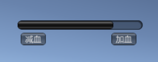
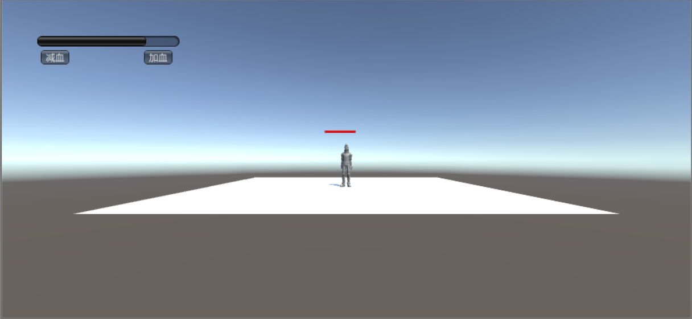

UI系统
血条（Health Bar）的预制设计。具体要求如下
- 分别使用 IMGUI 和 UGUI 实现
- 使用 UGUI，血条是游戏对象的一个子元素，任何时候需要面对主摄像机
- 分析两种实现的优缺点
- 给出预制的使用方法
IMGUI实现
IMGUI及时模式图形界面。它是代码驱动的 UI 系统，没有图形化设计界面，只能在 OnGUI 阶段用 GUI 系列的类绘制各种 UI 元素，因此 UI元素只能浮在游戏界面之上。
我们使用HorizontalScrollbar的宽度显示血量：GUI.HorizontalScrollbar(HealthBar, 0.0f, health, 0.0f, 1.0f); 创建两个button控制血量的增减。
具体代码如下：
1 | using System.Collections; |
创建空游戏对象，然后将脚本拖动到游戏对象上，将其保存为预制。运行效果如下：

UGUI实现
以下步骤参考了课堂资料
- 菜单 Assets -> Import Package -> Characters 导入资源
- 在层次视图，Context 菜单 -> 3D Object -> Plane 添加 Plane 对象
- 资源视图展开 Standard Assets :: Charactors :: ThirdPersonCharater :: Prefab
- 将 ThirdPersonController 预制拖放放入场景，改名为 Ethan
- 检查以下属性
- Plane 的 Transform 的 Position = (0,0,0)
- Ethan 的 Transform 的 Position = (0,0,0)
- Main Camera 的 Transform 的 Position = (0,1,-10)
- 运行检查效果
- 选择 Ethan 用上下文菜单 -> UI -> Canvas, 添加画布子对象
- 选择 Ethan 的 Canvas，用上下文菜单 -> UI -> Slider 添加滑条作为血条子对象
- 运行检查效果
选择 Ethan 的 Canvas，在 Inspector 视图
- 设置 Canvas 组件 Render Mode 为 World Space
- 设置 Rect Transform 组件 (PosX，PosY，Width， Height) 为 (0,2,160,20)
- 设置 Rect Transform 组件 Scale （x,y） 为 (0.01,0.01)
展开 Slider
- 选择 Handle Slider Area，禁灰（disable）该元素
- 选择 Background，禁灰（disable）该元素
- 选择 Fill Area 的 Fill，修改 Image 组件的 Color 为 红色
- 选择 Slider 的 Slider 组件
- 设置 MaxValue 为 100
为了使得血条始终面向camera，我们使用以下代码，并将其挂载在canvas上。
1 | using System.Collections; |
在My_HealthBar上加入
using *UnityEngine*.*UI*;public *Slider* healthSlider;healthSlider.value = newHealth;
得到如下代码
1 | using System.Collections; |
在HealthSlider中选择slider，保存ethan预制。运行界面如下：

左上角血条是IMGUI实现，人物头顶血条UGUI实现，点击增加或减少血量，两个血条血量会同时变化。
分析两种实现的优缺点
IMGUI
优点：
新手 UI 入门容易，帮助新手理解引擎的游戏循环
高级程序员，创建在线调试环境
避免了 UI 元素保持在屏幕最前端，又有最佳的执行效率，一切控制掌握在程序员手中
缺点：
- 传统代码驱动的 UI 面临效率低下
- IMGUI系统通常不打算用于玩家可能使用并与之交互的普通游戏内用户界面。为此，应该使用 Unity 的基于 GameObject 的 UGUI 系统。
UGUI
优点：
- 所见即所得（WYSIWYG）设计工具
- 支持多模式、多摄像机渲染
- 面向对象的编程
- UI 元素与游戏场景融为一体的交互
预置的使用
首先创建一个平面。然后将IMGUI_HealthBar拖入场景，再将UGUI_HealthBar（Ethan）拖入场景。在IMGUI_HealthBar的script中，HealthSlider选择slider。点击运行，即可显示两种效果的血条。